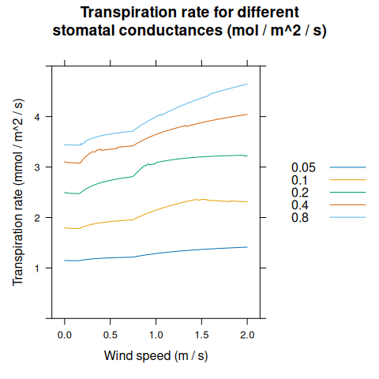
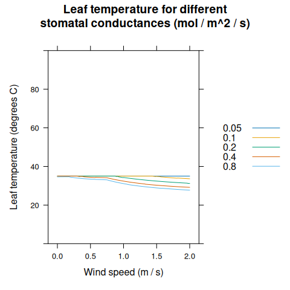
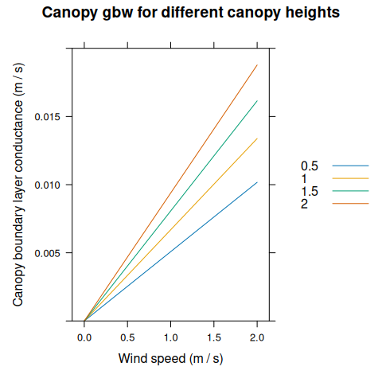
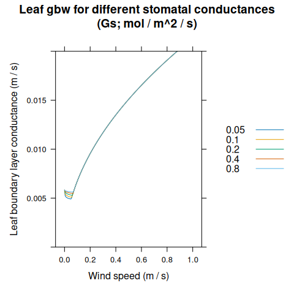

Energy Balance, Transpiration, and Leaf Temperature
Source:vignettes/web_only/energy_balance.Rmd
energy_balance.Rmd1 Canopy Energy Balance
Energy balance is discussed in many sources, such as Thornley and Johnson (1990) and Campbell and Norman (1998), the two main references for BioCro models. Here we begin with a general discussion, mostly using the notation from Chapter 14 of Thornley and Johnson (1990), but also borrowing a bit from Chapters 12 and 14 of Campbell and Norman (1998).
First, the total light energy (shortwave and longwave) absorbed by the canopy (\(J_a\)) is all dissipated or stored by the following processes:
Long-wave energy loss to the environment
Convective heat transfer between the canopy and the air
Evaporation of water from the interior surfaces of the leaves
Conductive heat transfer between the canopy and the ground
Canopy metabolism
Heat storage by the canopy
Mathematically, we can express this idea as
\[\begin{equation} J_a - R_L - H - \lambda E - G - M = q, \tag{1.1} \end{equation}\]
where \(R_L\) is the rate of long-wave energy loss, \(H\) is the rate of conductive heat transfer, \(\lambda\) is the latent heat of vaporization of water, \(E\) is the transpiration rate, \(G\) is the rate of heat loss to the ground, \(M\) is the rate of energy used by canopy metabolism, and \(q\) is the rate of heat storage by the canopy. Most of the quantities above are energy flux densities with typical units of J m\(^{-2}\) s\(^{-1}\). The only exception is \(\lambda\), which typically has units of J kg\(^{-1}\). Equation (1.1) is a crop-specific version of the more general principle of conservation of energy, and it already begins to highlight the connection between energy and transpiration.
The term “energy balance” is synonymous with “steady-state energy flow.” Thus, energy balance calculations are always made under the assumption that \(q = 0\). Another simplification is that the metabolic processes of photosynthesis and respiration only dissipate a small fraction of the incident energy, and can thus be ignored. Finally, we can combine \(J_a\), \(R_L\), and \(G\) into a single term (\(\phi_N\)):
\[\begin{equation} \phi_N = J_a - R_L - G. \tag{1.2} \end{equation}\]
With these changes, (1.1) becomes
\[\begin{equation} \phi_N - H - \lambda E = 0. \tag{1.3} \end{equation}\]
In other words, \(\phi_N\) is the net energy available to the crop for driving transpiration and sensible heat loss.
The terms \(H\) and \(E\) are related to the conductance of heat and water vapor from the canopy to the ambient environment. In fact, they can be both be expressed using one-dimensional diffusion equations:
\[\begin{equation} H = \rho c_p \left( T_l - T_a \right) g_H \tag{1.4} \end{equation}\]
and
\[\begin{equation} E = \left(\rho_{vl} - \rho_{va} \right) g_W, \tag{1.5} \end{equation}\]
where \(\rho\) is the density of dry air (kg m\(^{-3}\)), \(c_p\) is the specific heat capacity of dry air (J kg\(^{-1}\) K\(^{-1}\)), \(T_a\) and \(T_l\) are the temperatures of the ambient air and the leaves in canopy, respectively (K), \(\rho_{va}\) and \(\rho_{vl}\) are the water vapor densities in the ambient air and within the leaves, respectively (kg water m\(^{-3}\)), and \(g_H\) and \(g_W\) are the conductances to heat and water vapor (m s\(^{-1}\)). Note that temperatures are expressed in K here to ensure that the product \(\rho c_p T\) is an energy density with units J m\(^{-3}\) (even though the temperature difference \(T_l - T_a\) is numerically identical whether K or \(^{\deg}\)C are used for the temperatures). Thus, both Equation (1.4) and (1.5) express a flux density as the product of a conductance and a density gradient.
For a healthy leaf with sufficient access to water, in an environment with reasonably low vapor pressure deficit, the air in its intercellular spaces is close to full saturation (Wong et al. 2022). Thus, here we will make a simplifying assumption that \(\rho_{vl} = \rho_{sat}(T_l)\), where \(\rho_{sat}(T_l)\) is the saturation water vapor density at the leaf temperature. With this assumption, Equation (1.5) can be expressed as
\[\begin{equation} E = \left[ \rho_{sat}(T_l) - \rho_{va} \right] g_W. \tag{1.6} \end{equation}\]
Combining Equations (1.3), (1.4), and (1.6), we can now express the energy balance requirement as
\[\begin{equation} \phi_N - \rho c_p \left( T_l - T_a \right) g_H - \lambda \left[ \rho_{sat}(T_l) - \rho_{va} \right] g_W = 0. \tag{1.7} \end{equation}\]
This is a powerful equation because all of its terms either (i) can be taken as constant for a given set of environmental conditions or (ii) have a known dependence on the leaf temperature. Because of this, we can consider Equation (1.7) as a way to calculate the temperature of leaves in the canopy. Once \(T_l\) is known, Equation (1.6) can be used to calculate the transpiration rate \(E\). Often this is the main goal of an energy balance calculation, since the transpiration rate determines crop water use.
However, Equation (1.7) cannot be solved analytically as it is written. One main option is to solve it using a numerical approach, while another is to approximate some of its terms in a way that enables an analytical expression for \(T_l\) and \(E\). The following sections will discuss different approaches to this problem with varying levels of complexity.
2 A Penman-Monteith Equation
Here we continue following Chapter 12 of Thornley and Johnson (1990), which derives analytical expressions for \(T_l\) and \(E\) based on energy balance (Equation (1.7)). In this approach, we make a few more assumptions:
We treat the diffusion path for water vapor as consisting of two sequential components: (i) diffusion from the intercellular spaces across the stomata to the leaf surfaces (with conductance \(g_c\)) and (ii) diffusion from the leaf surfaces across the boundary layer to the bulk atmosphere (with conductance \(g_a\)).
We assume that the flows of water vapor and heat across the boundary layer are driven by the same mechanical processes.
We assume that \(\phi_N\), \(g_a\), and \(g_c\) do not depend on \(T_l\).
We assume that the temperature difference between the ambient air and the leaves in the canopy (\(\Delta T = T_l - T_a\)) is small.
When \(\Delta T\) is small, it is possible to linearize the equation for saturation water vapor density \(\rho_{sat}(T)\). This is an approach first taken by Penman. To do this, we first express \(\rho_{sat}(T_l)\) as a Taylor series centered on \(T_a\):
\[\begin{equation} \rho_{sat}(T_l) = \rho_{sat}(T_a) + \frac{d \rho_{sat}}{d T} \bigg\rvert_{T_a} \cdot \Delta T + \frac{1}{2!} \cdot \frac{d^2 \rho_{sat}}{d T^2} \bigg\rvert_{T_a} \cdot \left( \Delta T \right)^2 + ... \end{equation}\]
If \(\Delta T\) is small, then \((\Delta T)^2\) is even smaller, and we can consider it and any higher-order terms to be negligable. In this case, we can keep just the first two terms of the Taylor series:
\[\begin{equation} \rho_{sat}(T_l) \approx \rho_{sat}(T_a) + s \Delta T \tag{2.1}, \end{equation}\]
where \(s = \frac{d \rho_{sat}}{d T} \bigg\rvert_{T_a}\) is the slope of \(\rho_{sat}(T)\) at \(T = T_a\). With this simplification, Equation (1.6) becomes
\[\begin{equation} E = \left[ \rho_{sat}(T_a) + s \left( \Delta T \right) - \rho_{va} \right] g_W = \left( \Delta \rho_{va} + s \Delta T \right) g_W \tag{2.2} \end{equation}\]
where \(\Delta \rho_{va} = \rho_{sat}(T_a) - \rho_{va}\) is the vapor density deficit of the ambient air.
Because the stomata and boundary layer are in series, the total conductance to water vapor (\(g_W\)) is related to \(g_a\) and \(g_c\) according to
\[\begin{equation} \frac{1}{g_W} = \frac{1}{g_a} + \frac{1}{g_c}, \tag{2.3} \end{equation}\]
Additionally, because the same mechanisms of conduction and convection drive the flow of both water vapor and heat in the boundary layer, these conductances are identical:
\[\begin{equation} g_H = g_a. \tag{2.4} \end{equation}\]
Combining Equations (1.7), (2.1), (2.3), and (2.4), we can arrive at an expression of conservation of energy for a crop canopy where only water vapor conductances are used:
\[\begin{equation} \phi_N - \rho c_p \Delta T g_a - \frac{\lambda \left( \Delta \rho_{va} + s \Delta T \right)}{1 / g_a + 1 / g_c} = 0. \tag{2.5} \end{equation}\]
These may not look simple. Nevertheless, with some algebra, Equation (2.5) can be solved for the temperature difference \(\Delta T\):
\[\begin{equation} \Delta T = \frac{\phi_N \left( 1 / g_a + 1 / g_c \right) - \lambda \Delta \rho_{va}}{\lambda \left[ s + \gamma \left( 1 + g_a / g_c \right) \right]} \tag{2.6} \end{equation}\]
where \(\gamma = \frac{\rho c_p}{\lambda}\) is the “psychrometric parameter.” This is Equation 14.11e in Thornley and Johnson (1990). Note that by assumption, everything on the right-hand side is independent of the leaf temperature. Values of \(s\), \(\rho\), \(c_p\), etc can be found in reference tables, so if values of \(\phi_N\), \(g_a\), etc, are known or can be estimated, then Equation (2.6) can be used to calculate \(\Delta T\) (and hence \(T_l\)). It can also be plugged in to Equation (2.2) to calculate the canopy transpiration rate \(E\):
\[\begin{equation} E = \frac{s \phi_N + \lambda \gamma g_a \Delta \rho_{va}}{\lambda \left[ s + \gamma \left(1 + g_a / g_c \right) \right]}, \tag{2.7} \end{equation}\]
This is Equation 14.4k from Thornley and Johnson (1990), where it is described as “the Penman-Monteith equation.” However, just one page later, Thornley and Johnson (1990) gives an alternate version (Equation 14.5d). As it turns out, there are many different equations referred to as “the Penman-Monteith equation” throughout textbooks and the plant physiology literature. Thus, we prefer to call it “a Penman-Monteith equation” to indicate it is just one example from a group of potential Penman-Monteith equations. In the next section, we will discuss another version.
3 Another Penman-Monteith Equation
The assumptions given at the start of the previous section are not the only way to build analytical expressions for \(\Delta T\) and \(E\) from Equation (1.7). In fact, a different approach can be found in Chapter 14 of Campbell and Norman (1998). Here we make some alternate assumptions:
We assume that \(J_a\) and \(G\) do not depend on leaf temperature, but we use the Stefan-Boltzmann law to calculate \(R_L\) from \(T_l\).
We assume that \(g_H\) and \(g_W\) do not depend on leaf temperature.
We assume that the temperature difference between the ambient air and the leaves in the canopy (\(\Delta T = T_l - T_a\)) is small.
Applying the Stefan-Boltzmann law, we now have an expression for \(R_L\):
\[\begin{equation} R_L = \epsilon_s \sigma T_l^4, \end{equation}\]
where \(\epsilon_s\) is the canopy surface emissivity and \(\sigma\) is the Stefan-Boltzmann constant.
Because \(\Delta T\) is small, we can linearize the saturation water vapor density as before (Equation (2.1)). We can also linearize \(R_L\) by noting that
\[\begin{equation} T_L^4 = (T_a + \Delta T)^4 = T_a^4 + 4 T_a^3 \Delta T + 6 T_a^2 (\Delta T)^2 + 4 T_a (\Delta T)^3 + (\Delta T)^4. \end{equation}\]
We can again neglect terms with \(\Delta T^2\) or higher powers, yielding
\[\begin{equation} R_L \approx \epsilon_s \sigma \left( T_a^4 + 4 T_a^3 \Delta T \right) = \epsilon_s \sigma T_a^4 - \rho c_p \Delta T g_r, \tag{3.1} \end{equation}\]
where \(g_r = 4 \epsilon_s \sigma T_a^3 / ( \rho c_p)\) is a “radiative conductance” with units m s\(^{-1}\). Substituing this linearization into Equation (1.2) yields
\[\begin{equation} \phi_N = J_a - \epsilon_s \sigma T_a^4 - \rho c_p \Delta T g_r - G, \tag{3.2} \end{equation}\]
Combining Equations (1.7), (2.1), and (3.2), we have yet another a new version of the canopy energy balance equation:
\[\begin{equation} J_a - \epsilon_s \sigma T_a^4 - \rho c_p \Delta T g_r - G - \rho c_p \Delta T g_H - \lambda \left( \Delta \rho_{va} + s \Delta T \right) g_W = 0. \end{equation}\]
This can also be written as
\[\begin{equation} J_a - \epsilon_s \sigma T_a^4 - G - \rho c_p g_{Hr} \Delta T - \lambda \left( \Delta \rho_{va} + s \Delta T \right) g_W = 0, \tag{3.3} \end{equation}\]
where \(g_{Hr} = g_r + g_H\) is a combined conductance for radiation and heat. This expression of energy balance can now be solved for \(\Delta T\) to produce an equation analgous to Equation (2.6):
\[\begin{equation} \Delta T = \frac{\left( J_a - \epsilon_s \sigma T_a^4 - G \right) / g_W - \lambda \Delta \rho_{va}}{\lambda \left[ s + \gamma (g_{Hr} / g_W) \right]}. \tag{3.4} \end{equation}\]
Equation (3.4) can be substituted into Equation (2.2) to calculate the canopy transpiration rate \(E\):
\[\begin{equation} E = \frac{s \left( J_a - \epsilon_s \sigma T_a^4 - G \right) + \lambda \gamma g_{Hr} \Delta \rho_{va}}{\lambda \left[ s + \gamma (g_{Hr} / g_W) \right]}. \tag{3.5} \end{equation}\]
This equation is analagous to, but different from, Equation (2.7). Disregarding differences in notation, it is also identical to Equation 14.12 from Campbell and Norman (1998), where it is described as follows:
This is the well known and widely used Penman-Monteith equation for estimating evapotranspiration from plant communities.
Yet, it is substantially different from the Penman-Monteith equation given in Thornley and Johnson (1990) due to the different assumptions and linearizations made while deriving it.
4 The Penman-Monteith Approach
Sections 2 and 3 illustrate two possible ways to make approximations that enable Equations (1.7) and (1.6) to be solved for \(T_l\) and \(E\). However, there are many possible choices that could, in principle, each lead to slightly different versions of the equations:
Energy balance can be considered at the canopy or leaf scale.
Water vapor concentrations can be expressed as vapor densities, partial pressures, or mole fractions.
\(R_L\) can be linearized or considered as a leaf-temperature-independent component of \(\phi_N\).
The diffusion path for water vapor can be separated into distinct sequential steps or treated as a single process.
This list is not necessarily exhaustive, but serves to illustrate the idea that there is not one single Penman-Monteith equation. However, each potential version of the equation includes a linearization of \(p_{sat}(T_l)\) and possibly \(R_L(T_l)\), approximating each of these as a linear function of \(\Delta T\). This linearization is what enables the energy balance equation to be solved for \(T_l\). Thus, this “Penman-Monteith approach” is common to all of these equations even when there are differences between the equations themselves.
5 Energy Balance in BioCro
In Sections 1, 2, and 3, the canopy transpiration rate \(E\) depends on canopy-level conductances: \(g_H\), \(g_W\), \(g_a\), \(g_c\), and \(g_r\). In practice, these conductances are difficult to estimate a priori because they depend on gradients of wind speed, light intensity, and other factors within a plant canopy. In BioCro, we take an alternate approach where transpiration rates are estimated at the leaf level and then scaled up to the canopy level. This enables us to use models for leaf-level conductance (such as the Ball-Berry model for stomatal conductance) and also to account for variations in key inputs like \(J_a\) throughout the canopy. In this framework, the total canopy transpiration rate is given by
\[\begin{equation} E_{canopy} = \int_{\ell = 0}^{L} \left( E_{leaf}^{sunlit}(\ell) \cdot f_{sunlit}(\ell) + E_{leaf}^{shaded}(\ell) \cdot f_{shaded}(\ell) \right) d \ell, \tag{5.1} \end{equation}\]
where \(E_{leaf}^{sunlit}(\ell)\) and \(E_{leaf}^{shaded}(\ell)\) are the leaf-level transpiration rates per leaf area for sunlit and shaded leaves at cumulative leaf area index (cLAI) \(\ell\), \(f_{sunlit}(\ell)\) and \(f_{shaded}(\ell)\) are the fractions of sunlit and shaded leaf area at \(\ell\), and \(L\) is the total canopy leaf area index (LAI).
The equations derived above using the Penman-Monteith approach assume that \(g_W\)
is independent of both leaf temperature and incident light intensity.
Realistically, this assumption is likely to be violated because stomatal
conductance changes dynamically with photosynthesis, which in turn changes
dynamically with leaf temperature and incident light intensity. There is also a
buoyancy component to boundary layer conductance that depends on leaf
temperature. The equations used to calculate these conductances are complex and
not readily amenable to the types of linearizations employed in the
Penman-Monteith approach. So, in BioCro, we take a hybrid approach to energy
balance where \(T_l\) is varied iteratively to simultaneously determine \(g_W\),
\(T_l\), and \(E\) using Equation (2.6). See the leaf_energy_balance()
function in BioCro’s C++ code for more details.
Because \(E_{leaf}\) is calculated numerically in BioCro, it is not possible to obtain an analytical expression for \(E_{canopy}\) using Equation (5.1). Instead, the integral is approximated using a Riemann sum:
\[\begin{equation} E_{canopy} = \sum_{i = 0}^{N-1} \left( E_{leaf}^{sunlit}(\ell_i) \cdot f_{sunlit}(\ell_i) + E_{leaf}^{shaded}(\ell_i) \cdot f_{shaded}(\ell_i) \right) \cdot \frac{L}{N}. \tag{5.2} \end{equation}\]
Here the cLAI interval \((0, L)\) has been divided into \(N\) sub-intervals of equal width (\(L / N\)) and \(\ell_i = (i + 0.5) \cdot L / N\) is the midpoint of the \(i^{th}\) sub-interval.
Values of \(T_l\) and \(E\) calculated from energy balance are sensitive to the conductances across the stomata and boundary layer. Yet, the boundary layer conductance in particular is difficult to estimate because it depends on details such as wind speed, leaf shape, and other factors that change dynamically in realistic conditions and cannot be easily quantified. In BioCro, we consider the flow of water vapor from the leaf’s intercellular spaces to the bulk air in the atmosphere to consist of three sequential steps as the gas crosses the stomata, the leaf boundary layer, and finally the canopy boundary layer. The latter two conductances combine to form the overall boundary layer conductance:
\[\begin{equation} \frac{1}{g_b} = \frac{1}{g_{b,leaf}} + \frac{1}{g_{b,canopy}}, \end{equation}\]
where \(g_{b,leaf}\) and \(g_{g,canopy}\) are the conductances across the leaf and canopy boundary layers.
\(g_{b,leaf}\) is calculated using a model described in Nikolov et al. (1995). It treats the leaves in the canopy as individual flat objects in a moving air stream, and considers free and forced convection, where free convection is driven by wind and forced convection is driven by temperature gradients. In BioCro, wind speed within the canopy is modeled as an exponential decay with the cumulative leaf area index, and this depth-dependent wind speed is used to calculate \(g_{b,leaf}\). Because of this, and a dependence on stomatal conductance, \(g_{b,leaf}\) changes throughout the canopy and is different for sunlit and shaded leaves.
On the other hand, \(g_{b,canopy}\) is calculated using a model described in Thornley and Johnson (1990). It treats the canopy as an infinitely wide rough surface covering the ground, and only considers turbulent flow, so \(g_{b,canopy}\) primarily depends on the wind speed measured above the canopy. The model equations predict \(g_{b,canopy} = 0\) when wind speed is zero. In reality, temperature-driven convection would occur at low wind speeds, setting a lower limit for \(g_{b,canopy}\) as in the model for \(g_{b,leaf}\). To account for this in a simple way, a minimum value of \(g_{b,canopy}\) is enforced in BioCro. The minimum conductance is a parameter that can be varied by the user. \(g_{b,canopy}\) is the same for sunlit and shaded leaves at all depths within the canopy.
The numeric technique used to solve for \(T_l\) in BioCro (fixed-point iteration) does not always converge to a reasonable solution. To prevent extremely high or low leaf temperatures, \(\Delta T\) is restricted to lie between -30\(^{\circ}\)C and 30\(^{\circ}\)C. This restriction tends to be enforced only in unusual situations where stomatal conductance is very low (and hence assimilation is low as well), and thus has little impact on the overall result of a simulation.
5.1 BioCro Examples
BioCro’s leaf-level energy balance model:
transpiration_res <- module_response_curve(
'BioCro:leaf_evapotranspiration',
list(
absorbed_shortwave = 250,
atmospheric_pressure = 101325,
temp = 25,
canopy_height = 1,
leafwidth = 0.1,
min_gbw_canopy = 0.005,
rh = 0.6,
wind_speed_height = 10
),
expand.grid(
windspeed = seq(0, 2, by = 0.005),
Gs = c(0.05, 0.1, 0.2, 0.4, 0.8)
)
)
xyplot(
TransR ~ windspeed,
group = Gs,
data = transpiration_res,
type = 'l',
auto = TRUE,
xlab = 'Wind speed (m / s)',
ylab = 'Transpiration rate (mmol / m^2 / s)',
ylim = c(0, 5),
main = 'Transpiration rate for different\nstomatal conductances (mol / m^2 / s)'
)
xyplot(
leaf_temperature ~ windspeed,
group = Gs,
data = transpiration_res,
type = 'l',
auto = TRUE,
xlab = 'Wind speed (m / s)',
ylab = 'Leaf temperature (degrees C)',
ylim = c(0, 100),
main = 'Leaf temperature for different\nstomatal conductances (mol / m^2 / s)'
)
BioCro’s model for canopy boundary layer conductance:
canopy_gbw_res <- module_response_curve(
'BioCro:canopy_gbw_thornley',
list(
min_gbw_canopy = 0,
windspeed_height = 10
),
expand.grid(
windspeed = seq(0, 2, by = 0.025),
canopy_height = seq(0.5, 2, by = 0.5)
)
)
xyplot(
gbw_canopy ~ windspeed,
group = canopy_height,
data = canopy_gbw_res,
type = 'l',
auto = TRUE,
xlab = 'Wind speed (m / s)',
ylab = 'Canopy boundary layer conductance (m / s)',
ylim = c(0, 0.02),
main = 'Canopy gbw for different canopy heights'
)
BioCro’s model for leaf boundary layer conductance:
leaf_gbw_res <- module_response_curve(
'BioCro:leaf_gbw_nikolov',
list(
air_pressure = 101325,
leafwidth = 0.1,
temp = 25,
leaf_temperature = 26,
rh = 0.6
),
expand.grid(
windspeed = seq(0, 1, by = 0.005),
Gs = c(0.05, 0.1, 0.2, 0.4, 0.8)
)
)
xyplot(
gbw_leaf ~ windspeed,
group = Gs,
data = leaf_gbw_res,
type = 'l',
auto = TRUE,
xlab = 'Wind speed (m / s)',
ylab = 'Leaf boundary layer conductance (m / s)',
ylim = c(0, 0.02),
main = 'Leaf gbw for different stomatal conductances\n(Gs; mol / m^2 / s)'
)